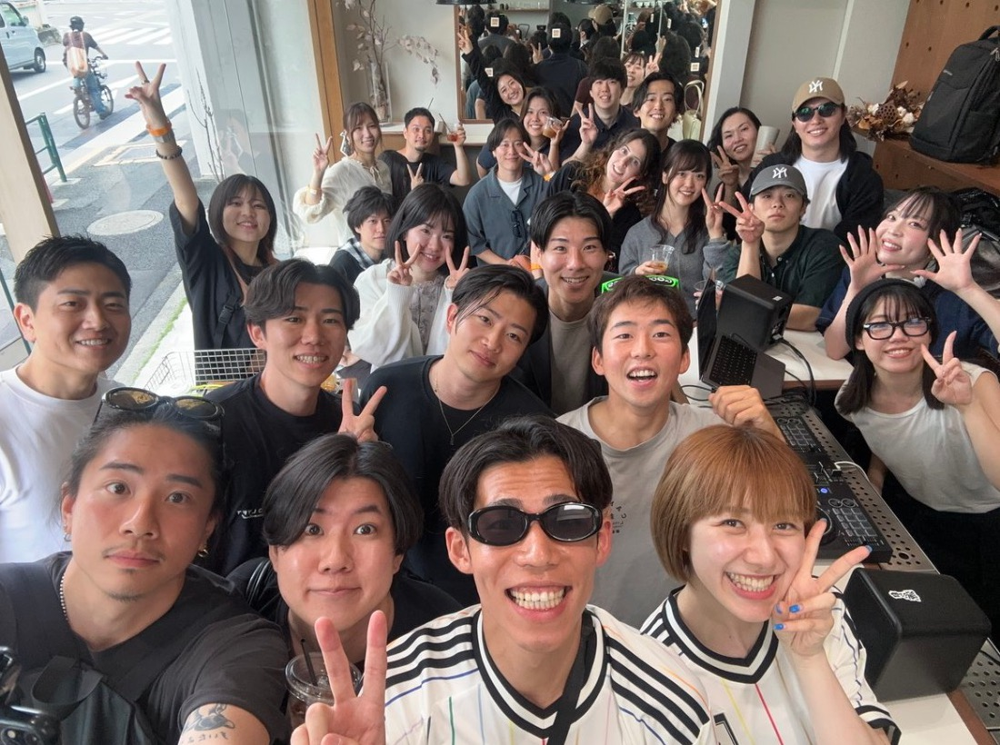
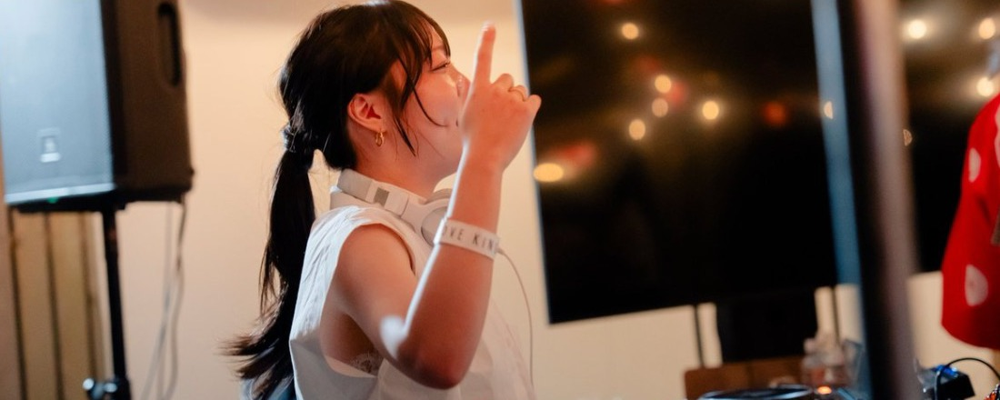

朝7時半、片町でDJとヨガ。
8時半、コーヒーを片手に
「いってきます」。

音楽で踊るのは、夜のクラブ 朝の片町でいい。
好きな曲で身体を起こして、朝ごはんを食べて、そのまま出勤する。それだけで、その日の調子が変わる。
2026.05 / 三軒茶屋 / 平日 8:00 START
GOOD VIBES MORNING は、DJの いくぽよ が東京・三軒茶屋のカフェで始めた朝のイベント。平日の朝8時からなのに、50人以上が集まった。
「夜は眠たい。朝にエネルギーを上げてから会社に行く方が、一日気持ちいい」

自称・日本あげまんリーダーのDJ。三茶の GOOD VIBES MORNING で平日朝8時に50人超を集め、恵比寿・六本木でもプレイ中。朝から場をアゲにくる。
蜷川幸雄の最後の劇団員から、鼻呼吸専門の呼吸コーチへ。ヨガ講師（RYT500）、著書『息を吐くだけでカラダの不調が消える呼吸革命』。金沢市出身。
三茶の話を聞いて、金沢でもやりたくなった言い出しっぺ。
MUSIC BAR & COFFEE PARLOR
大丈夫です。事前にオープンチャットに入っておくと、当日も話しかけやすくなります。
踊らなくて大丈夫です。コーヒーを飲みながら聴いているだけでも楽しめます。
初めてでも大丈夫です。立ったまま・座ったままでできる軽めのストレッチが中心なので、マットは要りません。
出勤する服のままで参加できます。終わったら、そのまま会社へどうぞ。
どちらもOKです。ヨガの時間（7:40〜8:00）に着いたときは、静かに入ってきてください。
Peatix でチケット（1,500円）を事前に購入してください。販売ページは準備中です。当日までのお知らせはオープンチャットで流します。
毎月1回、平日の朝にひらく予定です。日程はオープンチャットでお知らせします。
当日の様子を撮影して、SNSに載せます。参加者のみなさんの投稿も大歓迎です。写りたくない方は配慮しますので、事前にオープンチャットで運営に教えてください。
チケットは Peatix で販売します。当日までのお知らせは、オープンチャットで流します。